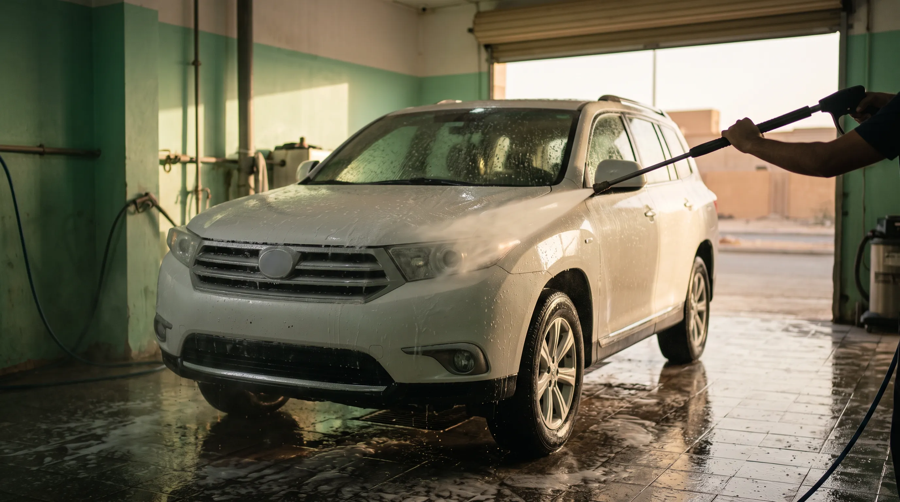

«خلصت السيارة؟»
مكالمة، رسالة، ورجعة للعامل تتأكد. إشعار جاهزية بعد تأكيد الفريق يخفّف السؤال المتكرر.

موالف لمغاسل السيارات
كل «خلصت السيارة؟» تقطع شغلك. وكل عميل يختفي بعد الغسلة، فرصة تضيع. موالف يرتّب الجاهزية والمتابعة على واتساب، عشان تتفرّغ لمغسلتك.
مثال لطريقة عمل موالف

مو بس وقت الغسيل
المشكلة مو في سؤال واحد. المشكلة في تكراره، وفي العميل اللي يطلع وما يصير بينكم تواصل بعدها.
مكالمة، رسالة، ورجعة للعامل تتأكد. إشعار جاهزية بعد تأكيد الفريق يخفّف السؤال المتكرر.
دفعت عشان يعرفك، بس ما عندك طريقة تذكّره. سجل آخر غسلة يجهّز لك متابعة في وقت مناسب، بموافقته.
خدمات ومدفوعات موزّعة بين ورقة ومحادثة. سجّل كل غسلة، وراجع اللي سجّله فريقك في مكان واحد.
العلاقة تكمل بعد الزيارة
تشير الدراسات إلى أن وجود قناة تواصل مباشرة مع العميل قد يزيد فرص عودته.
إشعار جاهزية، سؤال عن الخدمة، وتذكير في وقته على واتساب مغسلتك. كذا تظل قريب من العميل بعد ما يطلع، بموافقته.
النتائج تختلف حسب النشاط وجودة المتابعة.
من يوم مغسلتك
٦٤ ثانية تشرح المشكلة، حسبة الوقت، وكيف ممكن تشتغل رحلة العميل مع موالف.
تعذّر تشغيل الفيديو.افتح الفيديو مباشرة
غسلة لها بداية… ولها رجعة
العميل يتواصل على واتساب مغسلتك. فريقك يؤكد الخدمة والجاهزية، وموالف يساعدك ترتّب اللي بعدها.
لصاحب المغسلة
ضمن تصوّر موالف: مساعد يقرأ الخدمات والمدفوعات اللي سجّلها فريقك، ويرجع لك بملخص واضح. تأكيد الدفع يظل من الفريق، ما لم يوجد ربط فعلي.
في هذا المثال: غسلة خارجية واحدة، وفريقك سجّل ٤٥ ريال كمدفوعة.
حسبة على مقاس يومك
غيّر الأرقام حسب مغسلتك. شوف حجم الوقت في الردود المتكررة، وقيمة عدد من الغسلات المحتملة.
حسبة افتراضية وليست خسارة مثبتة أو وفرًا مضمونًا. قيمة الغسلات إيراد محتمل قبل التكاليف؛ ليست ربحًا أو أثرًا مثبتًا لموالف.
شهريًا في الردود المتكررة.
هذا حجم الوقت، وليس كله قابلًا للتوفير.
إشعار الجاهزية وسجل الدفع ومساعد صاحب المغسلة معروضة هنا كأمثلة لطريقة عمل موالف. الميزات المعروضة قيد التطوير.
من رقم واتساب أعمال تملكه مغسلتك. نراجع أهلية الرقم ومسار الربط الرسمي أولًا، وإمكانية استخدام التطبيق الحالي معه. ما نعدك بالاحتفاظ بطريقة الاستخدام الحالية قبل فحصها.
نحدد أبسط طريقة لفريقك لتسجيل الخدمة والدفع والجاهزية. أي ربط مع نظامك الحالي يحتاج فحصًا منفصلًا. إشعار الدفع يعتمد على تأكيد الفريق ما لم يوجد ربط فعلي.
فريقك أو النظام المرتبط يؤكد اكتمال الغسلة. نميّز العودة المسجّلة عن أثر الرسائل؛ فتح الرسالة أو الرد عليها ما يُحسب غسلة.
التذكير التسويقي لمن وافق عليه، مع إيقاف واضح وقوالب معتمدة عند الحاجة. نوضح رسوم Meta وأي مزوّد وميزانية الإرسال قبل التشغيل. ما نضمن عدد رجعات أو وفرًا محددًا.
جاهزية واضحة. متابعة في وقتها. على واتساب مغسلتك.